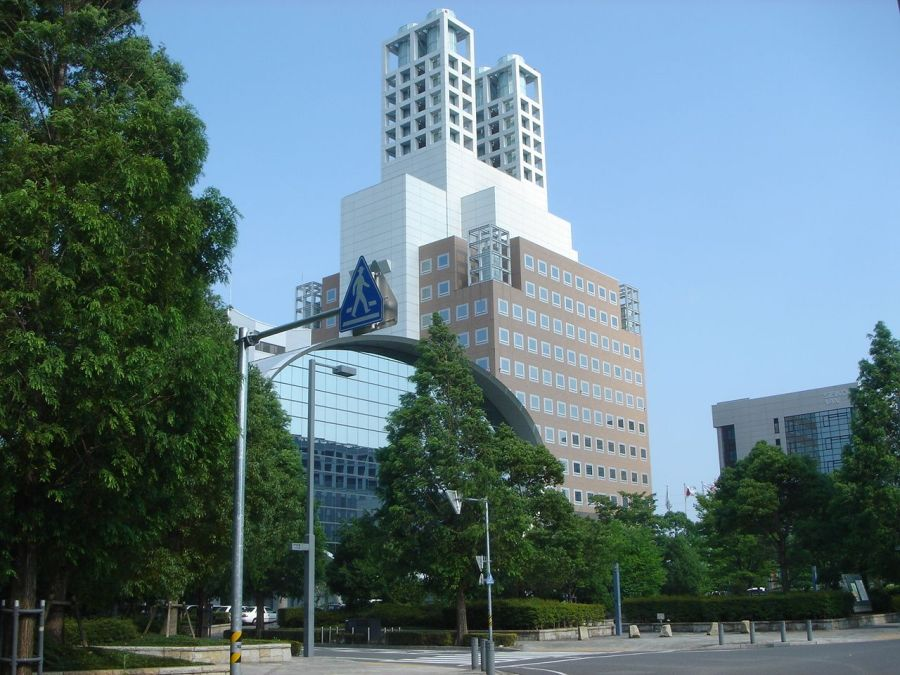

イア子ちゃん、
そういえばこんなものを手に入れたよ！


わ、かわいい♡
マス男くん、これはなに？鈍器？
イア子ちゃん、眼科行ってきたら？
これはRICOH THETAっていう、
360度撮影できるカメラだよ！
それはすごい！
これを使って、わたしたちの暮らすIAMASを、
みんなに紹介しちゃいましょうよ！
それはいいね！
あ、ちょっと待った！
どうしたの？パンツでも履き忘れたの？
履いてるよ！
PCで360度動画を見るには、
Google Chromeでの視聴が必須なんだ！
あと、iPhoneで360度動画を見る人は、
YouTubeアプリのインストールが必要なんだ！
そうなの？
そうなんだよ…
PCの人は、Google Chromeでの視聴をお願いします！
ダウンロードはこちらから！
https://www.google.co.jp/chrome/browser/desktop/index.html
もしiPhoneでYouTubeアプリがない人は、
ここからダウンロードをお願いします！
https://itunes.apple.com/jp/app/youtube/id544007664?mt=8
Androidはそのままで大丈夫だよ！
うちのマス男がお手数おかけします！
じゃあ早速、センタービルに行ってみよう！
ソフトピアジャパン センタービル

出典：https://ja.wikipedia.org/wiki/%E3%82%BD%E3%83%95%E3%83%88%E3%83%94%E3%82%A2%E3%82%B8%E3%83%A3%E3%83%91%E3%83%B3
センタービルについたわ！
それじゃあまずは、
ぼくらがよく行く4階にいこう！
※iPhoneの人は右上の「YouTube」を押してね！
え、すごい！
360度で見れてる！！
スマホだと、
スマホを向けた方向の映像が見れるよ！
ちなみにこれはセンタービルの4Fだよ！
ホールのドア、開かないわね。
そう、よく行くホールに行こうとしたら、
カードキー忘れてて開かなかった…
ていうか、マス男くん、なんかかぶってる…？
かぶってない！全然かぶってないよ！！
カードキー忘れたし、次は3階にいこう！
顔、明らかにデカいよね…？
よし、3Fに来たぞ！
ここでもカメラを回して、と…
※iPhoneの人は右上の「YouTube」を押してね！
！？！？！？
痛ァ…事故った…
いま、中の人が…
いない！いないよ！！
ていうかやばい、血が出てきた…

このぶつけっぷりだもん、血も出るよね…
そうだ、3Fだし、あそこに行こう！

あ、あそこは！
こんにちはー…
すみません、ちょっとケガしちゃって…

あらこんにちはー、
ってあらーどうしたの！
すごい血でてるじゃない！
そうだ、ここはIAMASの保健室ね！
臼井さんこんにちはー！

臼井さん：
IAMAS保健室でみんなをそっと見守ってくれる、
みんなのお母さん的存在だ！
あらーイア子ちゃんこんにちは！
マス男くん、これどうしたの？
ちょっと撮影してたらぶつけちゃって…
撮影？
こんなかぶり物してたらぶつけるわよ〜！
かぶってないです！！断じて！！
そういえばわたし保健室、
まだお世話になったことなかったわ！

壁の飾りがかわいいですね♡

消毒して絆創膏貼るわね。
あ、でももう血は止まってるわね…
いてて…
そういえばぼくも、
花粉症の薬もらいにきた以来だなあ。
結構みんなくるんですか？
そうね〜、みんな大体向こうの建物にいるから、
そんなに来ることないけど、
たまーにケガしちゃう子がいたり、
あとちょっと休みにきたり、薬もらいにきたり、
こっち来たついでにお茶飲んでく子もいるわね〜。
そうなんですね！
わたしも今度お茶飲みに来ていいですか？
どうぞどうぞ〜！
大体いるから、いつでも寄ってね。
はい、マス男くんはこれでいいかしらね。
安静にして、もしまた血が出てきたら、
またこっちくるか病院行きなさいね。
はい！ありがとうございます！
おじゃましましたー！
ありがとうございました！
は〜い、お大事にね〜！
またいつでもどうぞ〜。

いててて…
ケガしたけど、久しぶりに保健室行って、
臼井さんと話せておもしろかったね！
そうね！
わたしも保健室にお茶飲みに行こうかしら。
あれ、そういえばぼく、
なんでこんなケガしたんだっけ…
ちょっと！頭打って忘れたの！？
動画でIAMAS紹介の記事でしょ！？
あれ、そうだっけ…
アプリのダウンロードまでさせといて、
結局これ保健室の紹介じゃない！
まあ、臼井さんに会えたし、
おでこめっちゃ痛いけど、結果オーライ！
うーん、それもそうね！
これオチつかなそうだけど大丈夫？
うーん、爆発でもすれば？
ということで、
360度動画でIAMAS紹介は持ち越します！
でもまた必ずやります！
iPhoneの人、YouTubeアプリ消さないでね！！
みなさまのご協力あってのイアマ速報です！！
ということで、
引き続き、質問をお待ちしております！
IAMASにいる人に聞きたいこととかがあれば、
ぼくたちが代わりに聞きにいきまーす！
イア子とマス男への質問やメッセージはこちらから！
http://goo.gl/forms/hlgdXfxMei
<< 前の記事へ